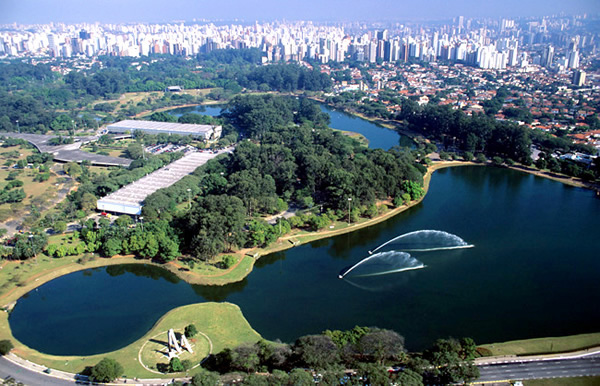
Um guia feito por todos
Explore espaços que acolhem você.
Descubra lugares, experiências e eventos acessíveis perto de você — com informações claras, verificadas e construídas pela comunidade.
- Informações verificadas
- São Paulo e região
- +120 locais mapeados
Descubra por perto
Locais acessíveis em destaque
16 locais encontrados
-
Acesso verificado -
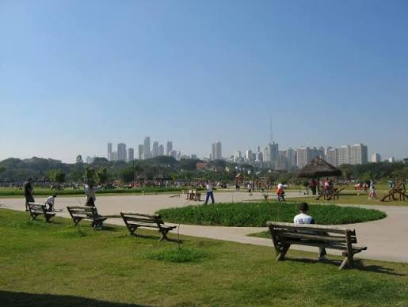
Acesso verificado Parques
Parque Villa-Lobos
Alto de Pinheiros- Rotas acessíveis
- Biblioteca com acervo em braille
- Audiolivros
-
Acesso completo -
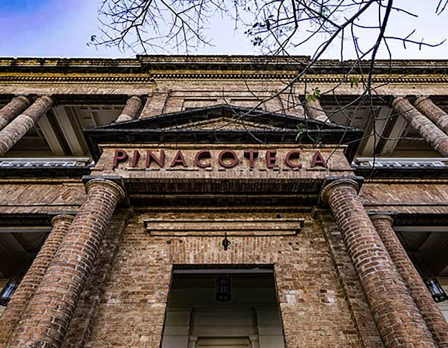
Acesso completo -
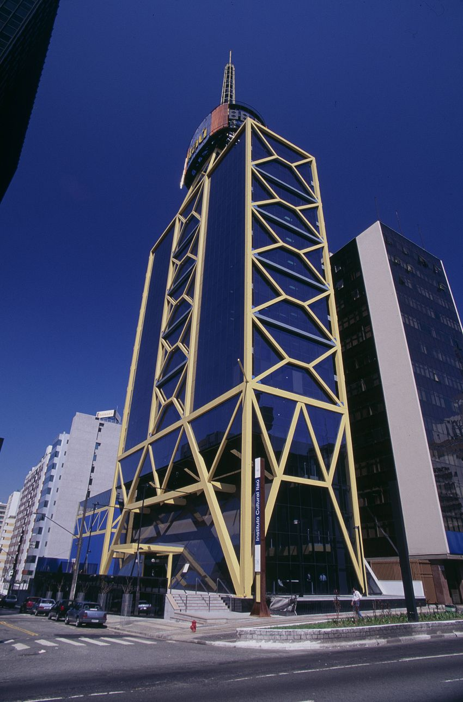
Programação acessível -
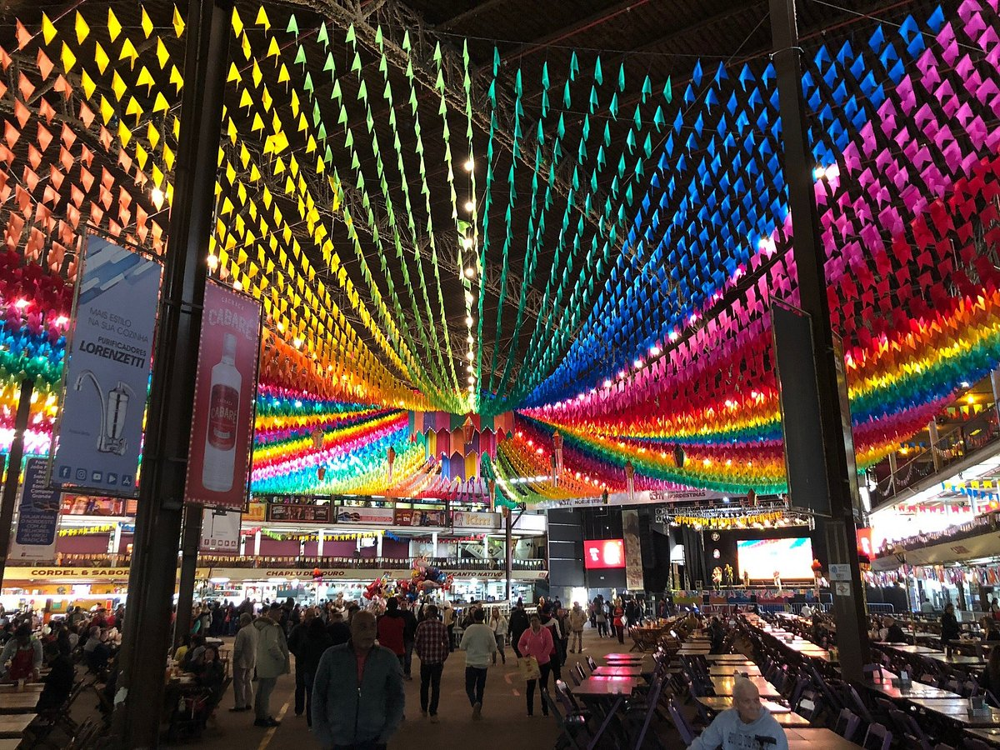
Acesso verificado Museus
Centro de Tradições Nordestinas (CTN)
São Paulo - SP- Ampla área plana
- Infraestrutura acessível
-
Inclusão em destaque Lazer
Parque da Mônica
Shopping SP Market- Intérpretes de Libras
- Sala do Silêncio (TEA)
- Fones abafadores
- Cordão de girassol
-
Acesso verificado Lazer
Aquário de São Paulo
Ipiranga- Percurso plano
- Cadeiras de rodas e carrinhos
- Entrada gratuita para PcD
-
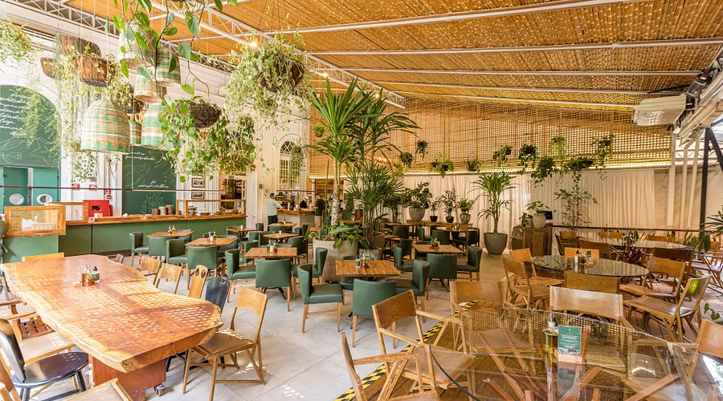
Acesso verificado Restaurantes
Restaurante Capim Santo
Jardim Europa- Entrada acessível
- Assentos acessíveis
- Banheiro acessível
- Estacionamento acessível
-
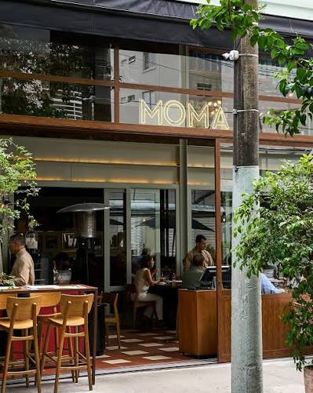
Acesso verificado Restaurantes
MOMA Itaim – Modern Mamma Osteria
Itaim Bibi- Vaga preferencial
- Entrada acessível
- Assentos acessíveis
- Banheiro acessível
-
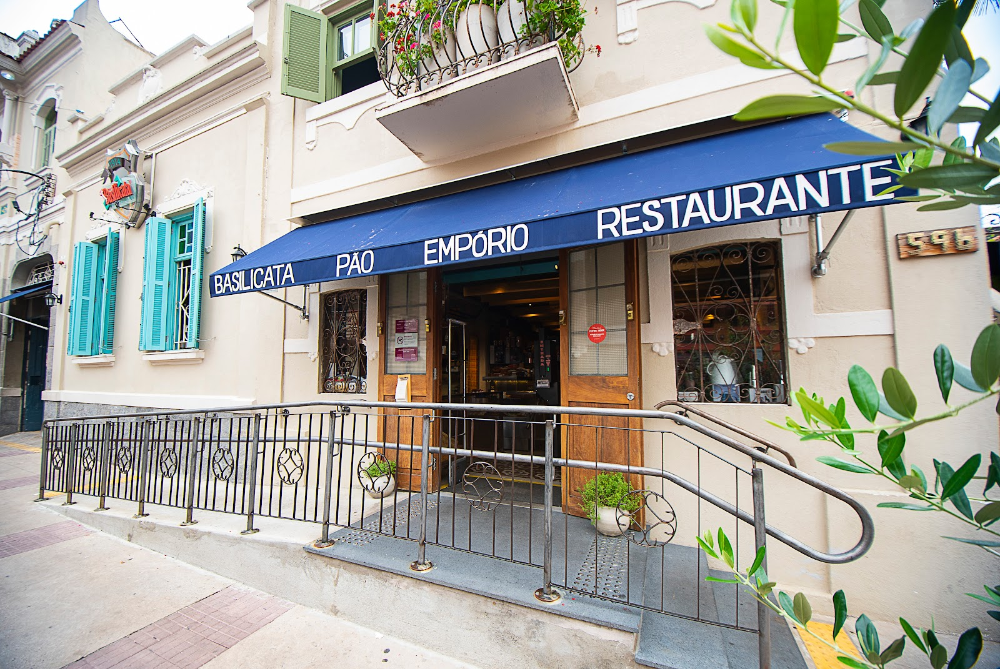
Acolhimento inclusivo Restaurantes
Basilicata – Pão, Empório e Restaurante
Bela Vista- Entrada acessível
- Banheiro acessível
- Acolhe pessoas autistas
-
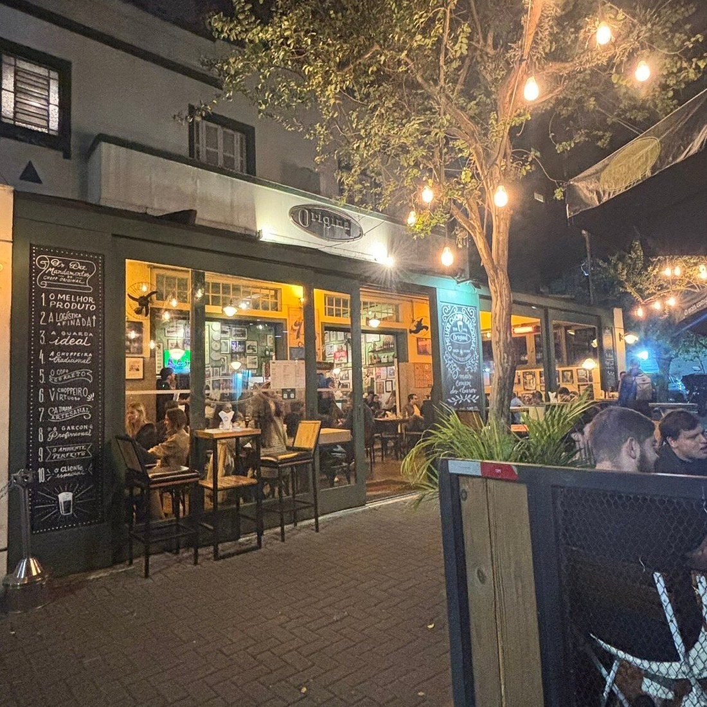
Acesso verificado Restaurantes
Bar Original
Moema- Entrada acessível
- Mesas
- Banheiro adaptado
- Estacionamento acessível
-
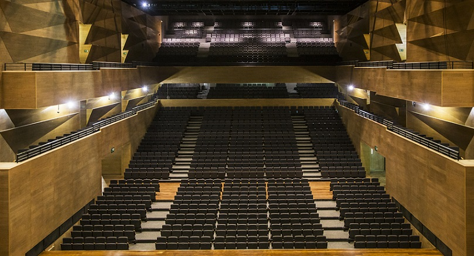
Acesso completo Teatros e Shows
Teatro Santander
Complexo JK Iguatemi- Rampas
- 3 elevadores
- Espaços para cadeirantes
- Assentos para pessoas obesas
- Banheiros adaptados
-
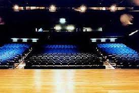
Programação acessível Teatros e Shows
Teatro Sesi São Paulo
Avenida Paulista- Acessibilidade física completa
- Libras
- Audiodescrição
-
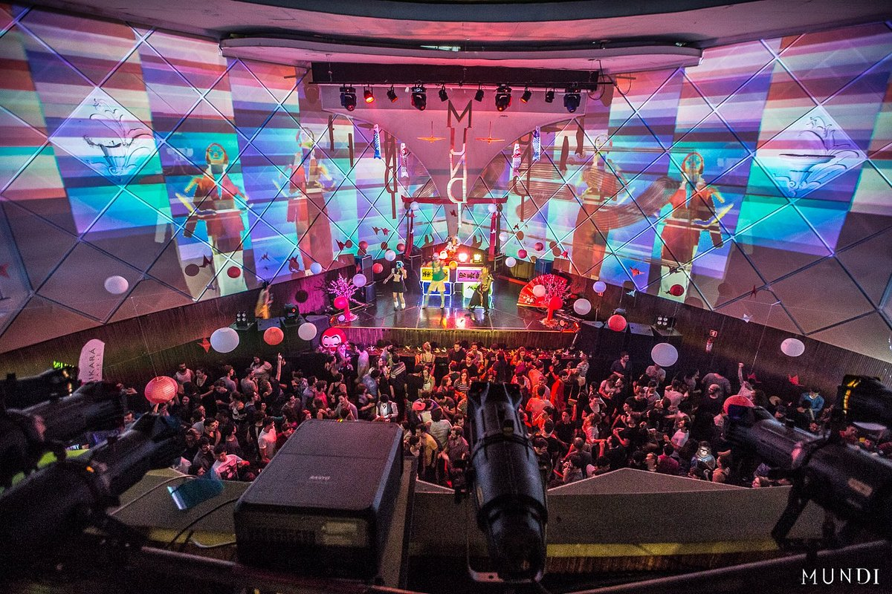
Acesso verificado Teatros e Shows
Cine Joia
Liberdade- Entrada preferencial
- Rampa de acesso
- Banheiro adaptado
- Área reservada para o palco
-
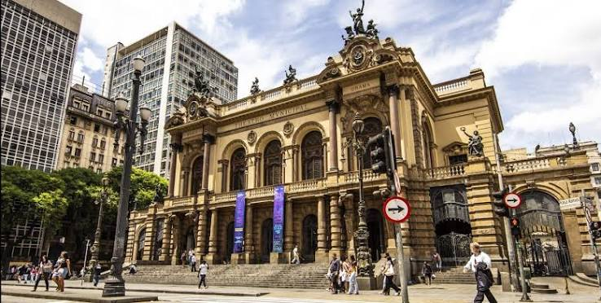
Selo de Acessibilidade Teatros e Shows
Teatro Municipal de São Paulo
República- Selo de Acessibilidade Arquitetônica
- Circulação segura
- Mobilidade reduzida
-
Informação detalhada
Saiba quais recursos estão disponíveis antes de sair de casa.
-
Comunidade ativa
Locais avaliados e atualizados por quem vive a cidade.
-
Experiências melhores
Planeje seus passeios com mais autonomia e tranquilidade.